<section class="sidebar">
  <aside class="sidebar-logo">
    <div></div>
  </aside>
  <aside class="sidebar-tools"><span class="sidebar-tools__item"></span><span class="sidebar-tools__item"></span><span class="sidebar-tools__item"></span><span class="sidebar-tools__item--active"></span></aside>
</section>